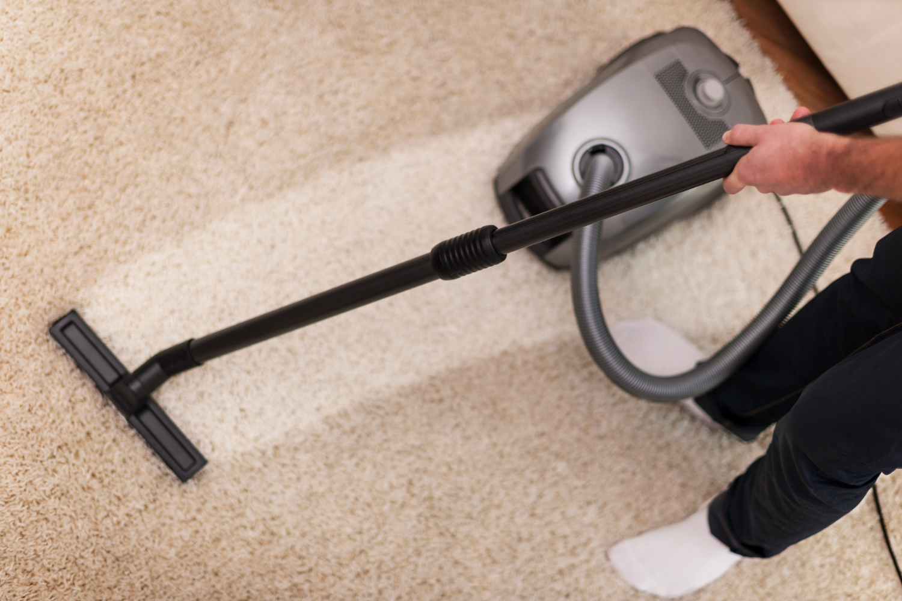

When it comes to keeping your home fresh and clean, deep carpet cleaning is the unsung hero of household chores. Sure, vacuuming can pick up the surface crumbs and dust, but what about the unseen layers of dirt, allergens, and who-knows-what lurking deep within your carpet fibers? That’s where we, at Carpet Cleaner Blackpool, come in, armed with our trusty cleaning machines and a sprinkle of humor to make your carpets look like new again.
Let’s start with the obvious question: why deep carpet cleaning? Well, imagine your carpet is like that mysterious drawer everyone has—full of things you’ve forgotten about but don’t want to deal with. Over time, carpets accumulate everything from dust and dirt to pet dander and spills. Regular vacuuming is like opening that drawer, taking a quick glance, and then shutting it again. It gets rid of the obvious mess, but doesn’t deal with the buildup that’s hiding underneath.
Deep Carpet Cleaning, on the other hand, is like Marie Kondo-ing that drawer—getting rid of everything that doesn’t spark joy (or in this case, clean air and a fresh-smelling home). By using powerful cleaning solutions and equipment, we’re able to reach the deepest layers of your carpet, removing dirt, allergens, and bacteria that can cause odors and even affect your indoor air quality.
At Carpet Cleaner Blackpool, we take our deep cleaning seriously. Our process is thorough, effective, and designed to leave your carpets looking and feeling brand new. Here’s how we do it:
Deep carpet cleaning offers more benefits than just a clean surface. Here are a few reasons why it’s worth the investment:
While we’re on the subject of deep cleaning, let’s not forget about your upholstery. Sofas, chairs, and other upholstered furniture can collect just as much dirt and grime as your carpets—if not more. Our upholstery cleaning services at Carpet Cleaner Blackpool are designed to deep clean your furniture, removing stains, odors, and allergens.
Just like with carpets, we start with an inspection to identify any problem areas. We then apply a pre-treatment solution before using our deep cleaning equipment to get into every nook and cranny of your upholstery. The result? Furniture that looks (and smells) as good as new.
When was the last time you thought about cleaning your mattress? If you’re like most people, the answer is probably “not recently.” But considering that we spend a third of our lives in bed, it’s worth making sure your mattress is as clean as possible.
At Carpet Cleaner Blackpool, we offer mattress cleaning services that go beyond just flipping it over. Our deep cleaning process removes dust mites, allergens, and other debris that can accumulate over time, helping you sleep better and breathe easier.
Leather furniture adds a touch of class to any room, but it also requires special care to keep it looking its best. Our leather suite cleaning service at Carpet Cleaner Blackpool is designed to clean, condition, and protect your leather furniture, ensuring it stays soft, supple, and free of cracks.
We use gentle, pH-balanced cleaners that are specifically formulated for leather, followed by a conditioning treatment that restores moisture and prevents future damage. It’s like giving your leather a spa day—and who doesn’t love a little pampering?
You might be wondering, “Why should I choose Carpet Cleaner Blackpool for my deep cleaning needs?” Well, aside from our top-notch services and professional results, we bring a personal touch to everything we do. We’re a family-run business with over two decades of experience, and we treat your home like it’s our own.
We’re also fully insured and certified, so you can trust that your carpets, upholstery, mattresses, and leather furniture are in good hands. Plus, we believe that cleaning doesn’t have to be a chore—it can be a refreshing experience that leaves you feeling satisfied and maybe even a little bit amused.
Deep carpet cleaning isn’t just a luxury—it’s a necessity if you want to keep your home clean, healthy, and looking its best. At Carpet Cleaner Blackpool, we’re here to take the hassle out of deep cleaning, offering a range of services that go beyond just carpets.
So, whether it’s time to freshen up your carpets, give your furniture some TLC, or ensure your mattress is as clean as possible, give us a call. We’ll bring the expertise, the equipment, and maybe even a joke or two, while we make your home feel like new again.